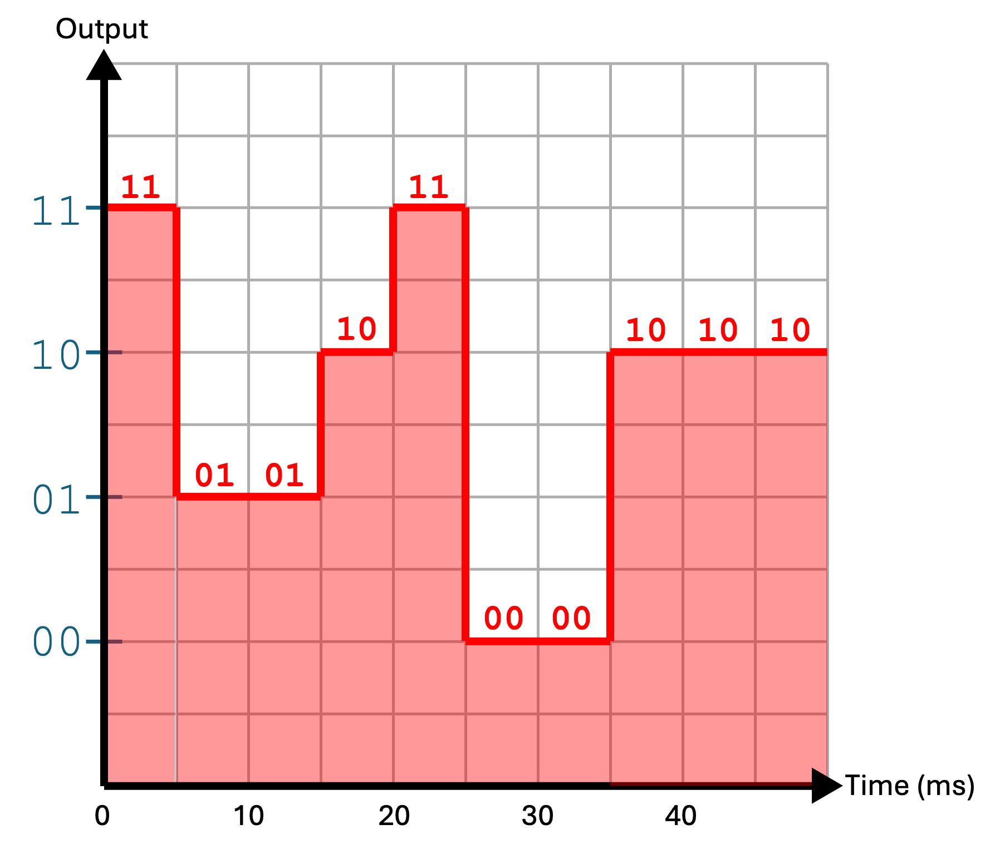

GCSE Link: None
 Communication is the process of transferring information from one party to another, via some communication medium.
Communication is the process of transferring information from one party to another, via some communication medium.
This medium is usually some kind of cable for a wired connection, or the air for a wireless connection.
 The bit rate measures the speed of communication, i.e. how much data can be sent every second.
The bit rate measures the speed of communication, i.e. how much data can be sent every second.
The bit rate is measured in bits per second (bps), kilobits per second (kbps), or megabits per second (Mbps).
 The Baud rate measures how many changes can be made to a signal every second.
The Baud rate measures how many changes can be made to a signal every second.
The Baud rate is measured in Bauds or changes per second. But how is it different from the bit rate?
Diagram 1 shows an example of a digital signal used to transmit information.
 Diagram 1
Diagram 1

Here, 20 bits have been transferred in 0.05 seconds (50ms), and so the bit rate is 400 bps. However, there can only be a maximum of 10 signal changes in that same time period, so the Baud rate is 200 changes/sec.
In general, bit rate (bps) = Baud rate (changes/sec) ×
bits per signal (bits).
 Bandwidth (in the context of communication) is the range of frequencies which can be used in a medium.
Bandwidth (in the context of communication) is the range of frequencies which can be used in a medium.
That means that bandwidth is equal to the highest possible frequency minus the lowest possible frequency that can be transmitted in a certain medium. Because bandwidth is directly proportional to bit rate, a higher bandwidth means a higher bit rate.
 Latency is the time delay between a signal being sent and received.
Latency is the time delay between a signal being sent and received.
Note that latency is unrelated to bit rate. It is possible to have a high bit rate (a lot of data sent every second) with a high latency (the data takes a long time to get to the receiver).
 Calculate the bit rate of a communication that has a Baud rate of 3 MegaBaud and 16 possible voltage levels.
Calculate the bit rate of a communication that has a Baud rate of 3 MegaBaud and 16 possible voltage levels.
16 voltage levels means 4 bits per signal (because 24 = 16). Therefore
bit rate = 3,000,000 × 4 = 12Mbps.